正常上顎竇｜冠狀切面
Drumond 等・圖 1

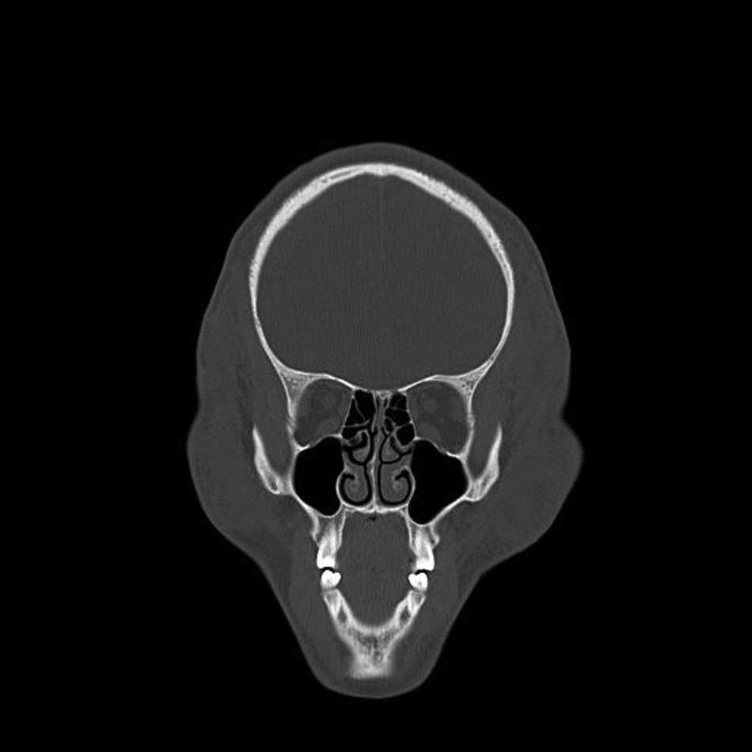
讀片從植牙軸線
一路看到竇口
同一張 CBCT 要回答三個問題。植體放在哪裡才符合修復需求？器械會碰到哪些構造？上顎竇的通氣與引流是否有疑慮？
骨量、竇底與植體位置
在預定植體軸線量殘存骨高度（residual bone height, RBH），一起記錄齒槽嵴寬度、竇底斜度和鄰牙根的位置。缺牙後，齒槽嵴吸收與上顎竇向下氣化都可能減少可用骨量。Sharan 與 Madjar 比較同一位置拔牙前後的全景片，測得竇底平均向下移動 1.83 ± 2.46 mm，個別差異很大。A05 S01
中隔、竇壁和血管
逐張追蹤中隔起點、方向與高度，再找外側壁厚度、狹窄角度和血管管道。後上齒槽動脈與眶下動脈可在外側壁吻合。Tran 等在 400 個象限中，有 336 個能從影像辨認骨內血管。影像上找不到管道時，開窗仍須預想出血與視野受限的情況。A01 A02 A06 A07
竇膜、竇口與牙源
Schneiderian membrane 的纖毛上皮把分泌物帶向靠上內側的自然竇口。沿上顎竇往上確認竇口與漏斗部，再往下檢查同側根尖、深牙周骨缺損、拔牙區和既有植體。如果 CBCT 擷取範圍止於竇底，病歷就記下「竇口未涵蓋」。有引流疑慮時，由耳鼻喉科補足評估。A03 A04 P09 S02
沿外側壁找血管管道Ketabi 等・圖 3

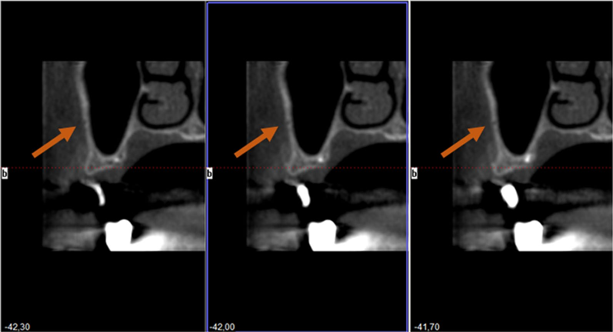
換成矢狀切面看血管
血管管道｜矢狀切面Ketabi 等・圖 4

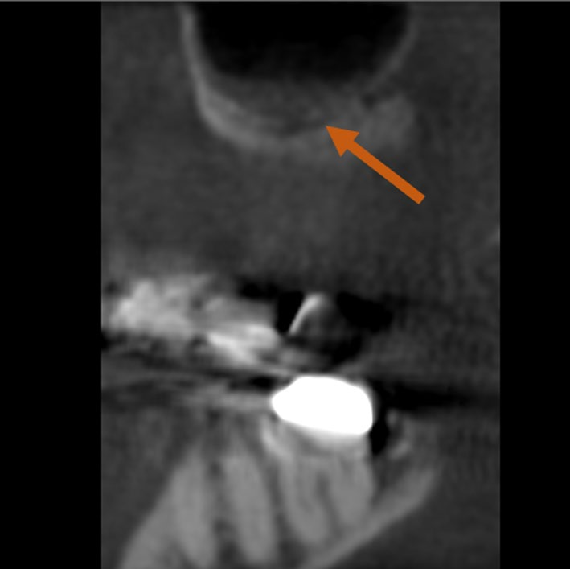
局部黏膜增厚圖 2

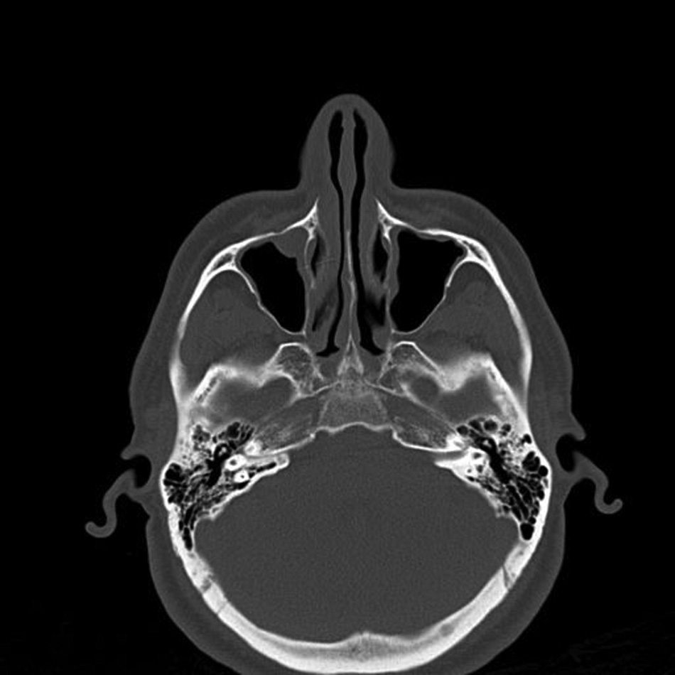
慢性鼻竇炎圖 3

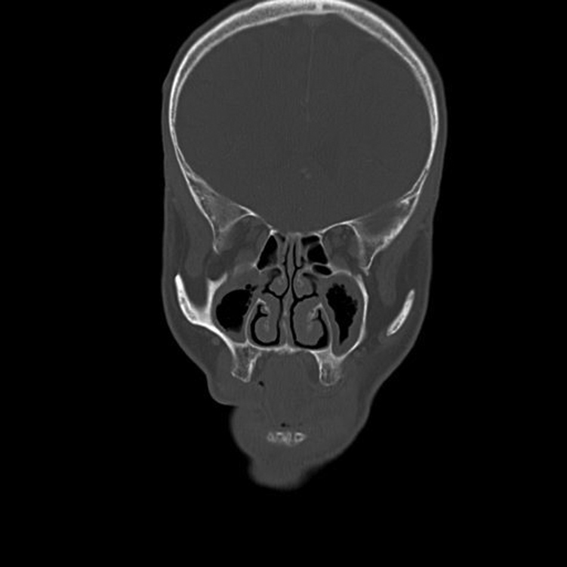
牙源性鼻竇炎圖 4

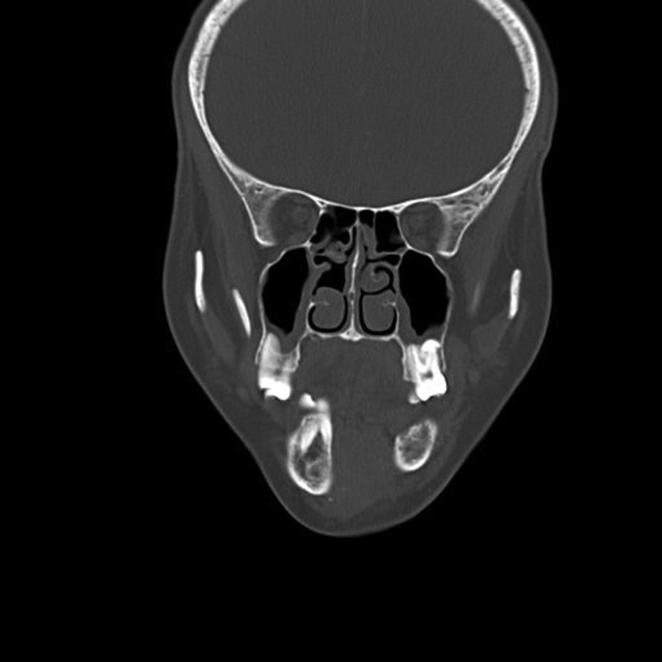
急性鼻竇炎圖 5

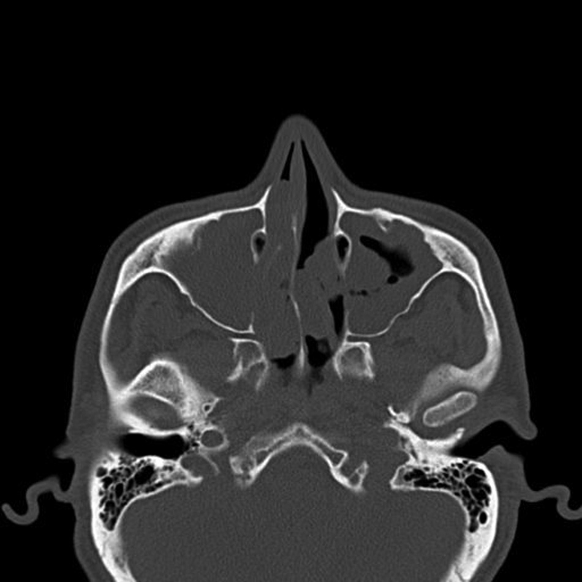
息肉樣病灶圖 6

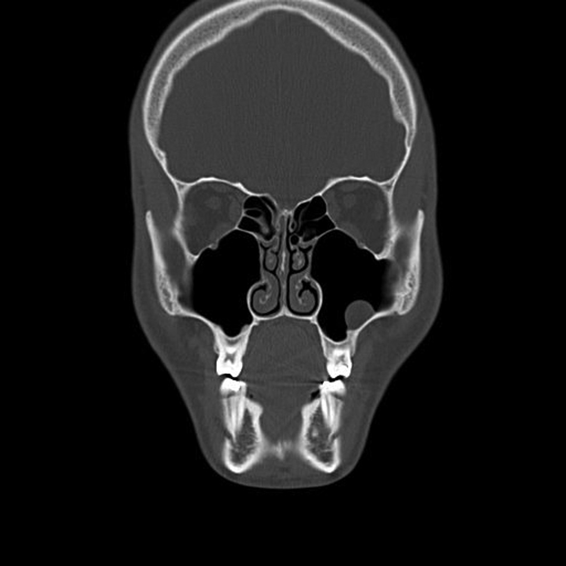

短植體、齒槽嵴入路
與側窗入路
先定修復位置，再評估可用自體骨能否提供初期穩定、需要抬升多大範圍，以及萬一穿孔時能不能看清楚、處理得了。
| 選項 | 什麼情況值得考慮 | 術前確認 |
|---|---|---|
| 短植體 | 可用骨量足以在計畫位置容納短植體，已把植體與上部修復負荷一起評估。 | 確認寬度、骨質、冠高、受力方向和清潔可及性。Thoma 等的隨機試驗從 RBH 5–7 mm 的族群比較 6 mm 植體與 11–15 mm 植體合併補骨。S05 |
| 齒槽嵴入路 | 提升範圍局部，可合理預期同次植入達到初期穩定。 | 逐位點讀竇底斜度、相鄰中隔及預計抬升量。術中直接視野有限，先想好懷疑穿孔時的停損方案。敲擊式骨鑿另有術後姿勢性眩暈的病例。H01 R02 C02 |
| 側窗入路 | 需要較大或多位點抬升，或希望直接看見竇壁、剝離範圍與膜的狀況。 | 規劃開窗和中隔、血管及竇壁轉折的關係。預期無法在自體骨達到穩定時，可分期植入。H02 R01 C11 |
把研究的納入條件一起記下來
Farina 等隨機比較兩種抬升入路，納入 RBH 3–6 mm 的個案。第 6 年有 43 位回診（54 位合格），兩組回診者的植體存活率均為 100%。這批資料適合用來討論經篩選的病例，不宜把 3 mm 當成所有操作者都能採用的界線。S04
早期兩篇入路回顧各有不同納入研究、植體表面、殘存骨量與追蹤條件。若要比較術式，優先看同一試驗、相近條件和同一終點的結果。R01 R02
兩篇經典解決的是哪個問題
Boyne 與 James 在 1980 年報告以自體骨與骨髓移植增加上顎竇底下的可用骨。Summers 在 1994 年描述以 osteotome 擴張、壓縮上顎鬆質骨的技術，提出由齒槽嵴處理後牙區骨量的思路。後來的齒槽嵴入路研究，還得一起讀抬升量、穩定性與術後結果。H02 H01 R02
中隔把單一術區分成兩側Schiller 等・圖 1

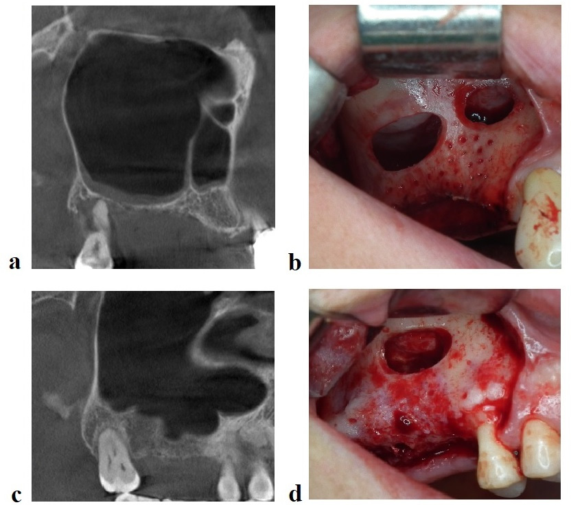
竇膜穿孔後
先確認能否封住
先停下會繼續牽拉竇膜或推送顆粒的動作。看清裂口位置、邊緣、可用支撐與出血狀況，再決定修補、改用能直視的入路，或分期處理。
哪些地方容易撕開
把中隔、外側壁轉角、窄的竇底和膜附著緊的地方標在術前影像上。Schwarz 等的 407 次增高術中，穿孔 35 次，有中隔者穿孔的勝算較高（OR 4.8）。Pizzini 等的側窗回溯研究也觀察到厚外側壁、窄角度、較大窗口與既有竇病變的關聯。兩批病例的穿孔率分別為 8.6% 與 25.7%，各自反映研究中的病例與判定方式。M09 M18
把厚度當成一項線索
Wen 等的齒槽嵴病例，在 ≤0.5 mm 與 ≥3 mm 組看見較多穿孔。Lin 等的側窗研究則在 1–1.5 mm 組觀察到最低穿孔率。Lum 等的側窗病例中，穿孔組平均較薄，殘存骨高度也較低。術前讀到極薄或明顯增厚時，回頭查量測位置、膜的外形及整體解剖，再決定器械與入路。M07 M08 M10
側窗病例的竇膜裂口Koleilat 等・圖 3

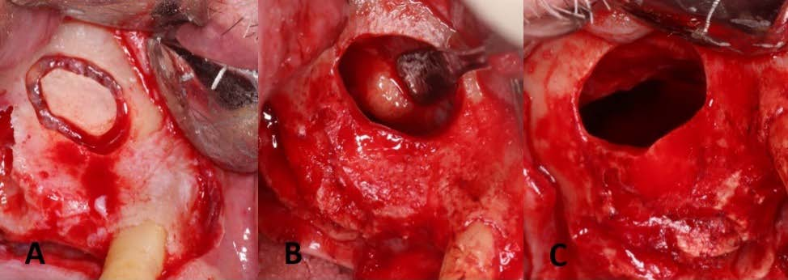
從裂口邊緣判斷修補的可行性
膠原膜合併 PRF 的單一病例Koleilat 等・圖 5

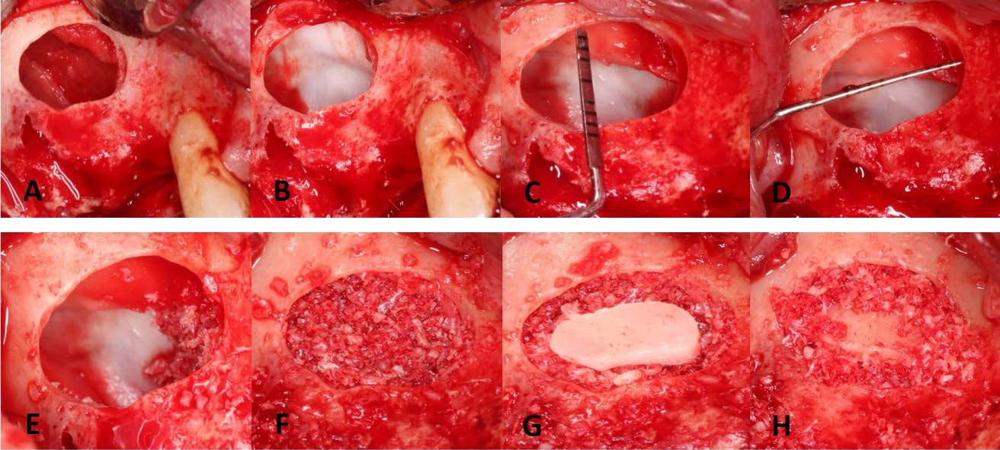
看腫脹的走勢
也查植體的位置
術後影像要和症狀、手術經過及時間點一起讀。追蹤時先問疼痛與腫脹是否持續加重，再問鼻部症狀、傷口和有沒有異物移位的疑慮。
短期黏膜水腫
Makary 等觀察 32 次側窗增高術，術前竇膜平均 0.73 mm，第一週合併量測平均 5.4 mm，3、6、12 個月平均降至 1.3、0.68、0.39 mm。Omori 等也呈現一週時水腫延伸到竇口和漏斗部的案例。讀到增厚時，先對照術後第幾天、引流與症狀變化。P07 C06 S11
感染、補骨材外逸與口竇交通
疼痛或腫脹加重、發燒、膿性鼻漏或口內流膿時，應儘早回診評估。檢查傷口裂開、補骨材是否外露及口竇交通，必要時定位感染或異物，和耳鼻喉科討論引流與移除感染源。病歷記錄顆粒是朝外側骨窗外移，還是進了竇腔。C01 C04 C08 C09
要升級為急診的症狀 眼周腫脹合併視力改變、複視或眼球活動痛，以及嚴重頭痛、神經症狀或明顯全身病況惡化。S07
術前、術後一週與九個月Omori 等・圖 1

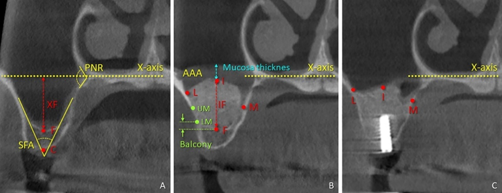
水腫延伸至引流區Omori 等・圖 2

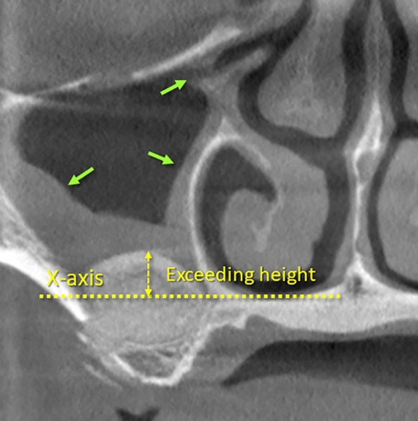
固定突出與游離移位，處理方式不同
- 已骨整合，植體尖端突出
- 確認植體穩定、記下影像基準，安排維護和追蹤。出現鼻竇症狀時，與耳鼻喉科一起評估牙源、通氣引流與是否需要進一步處理。C07
敲擊式增高後的短暫轉動感
翻身、抬頭或躺下誘發短暫旋轉感時，把良性陣發性姿勢性眩暈（BPPV）列入鑑別，交由能做前庭評估的人員確認。持續性眩暈或合併神經症狀時，應儘速評估其他病因。C02 C03
二階手術時發現植體移位Bär 等・圖 1

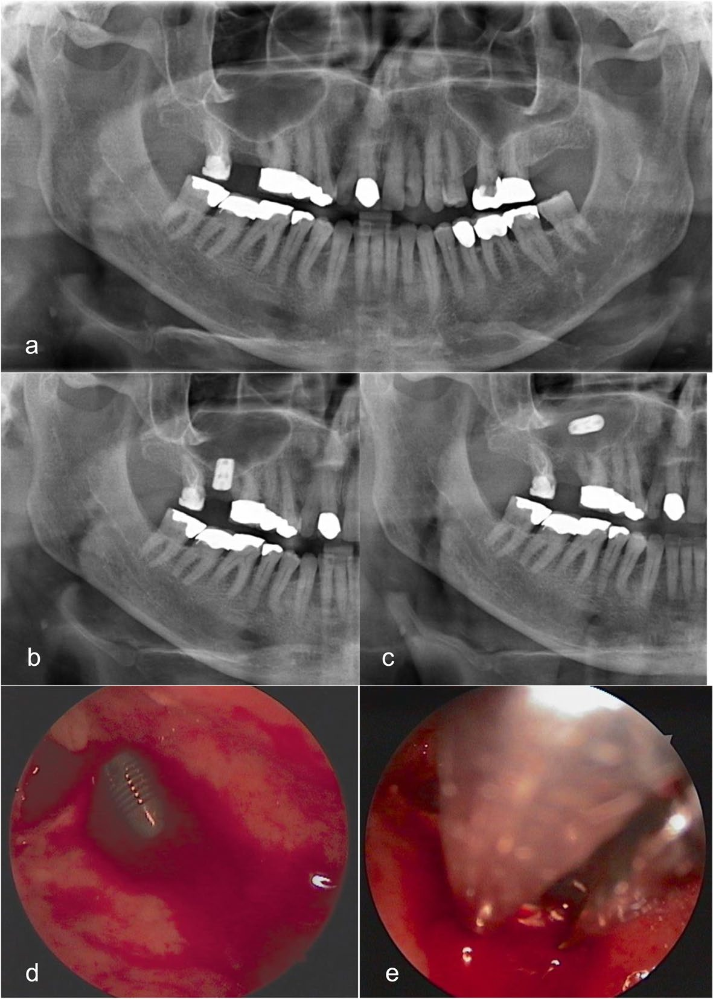
課前快速複習
先答一遍，再展開核對。
60 篇課前文獻
依原資料夾分組。每篇列出研究類型、重點和適合回讀的問題。正文的代碼可直接跳到對應條目。
歷史起點 2 篇
上顎竇解剖 7 篇
影像與病變 13 篇
術式與風險 5 篇
竇膜穿孔 22 篇
其他併發症 11 篇
補充文獻與圖版 12 篇
找不到符合的文獻。可試試作者姓氏、主題或引文代碼。